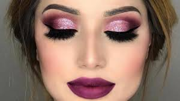
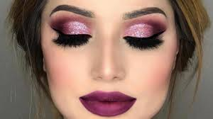
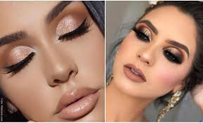
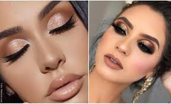
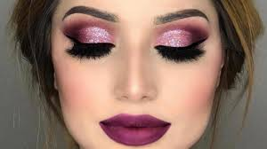
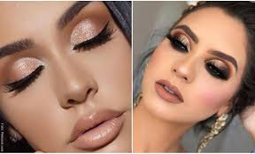

.jpg)
.jpg) 

.jpg) 

Belle Fleur promociona maquillaje de calidad
Natura Una incluye productos para rostro, ojos y labios. Nuestra línea Tododia ofrece una ampliavariedad de productos desarrollados para el uso diario en diversos segmentos. Esta línea sigue una tendencia mundial en el uso cosmético de ingredientes naturales, como la leche, el azúcar o la miel.
NYX Cosmetics nació en Los Ángeles en el 98 a manos de Toni Ko, una 'beauty junkie' apasionada del mundo de la belleza y el maquillaje que quiso acercar los productos de calidad tanto a profesionales como a aficionados, sin importar el nivel adquisitivo.
M·A·C es la autoridad mundial en maquillaje profesional gracias a su experiencia sin igual en el ARTE de maquillar.
Súper pigmentados y ricamente formulados, nuestros productos versátiles son una rareza en la industria cosmética porque, a diferencia de otras marcas, pueden ser utilizados por profesionales del maquillaje y principiantes de belleza por igual.
Desde imprimaciones compactas y paletas para llevar hasta kits convertibles y estuches de maquillaje más grandes que la vida, llevamos una canasta de consumo completa de más de 500 productos en casi todas las categorías de belleza que se te ocurran.

